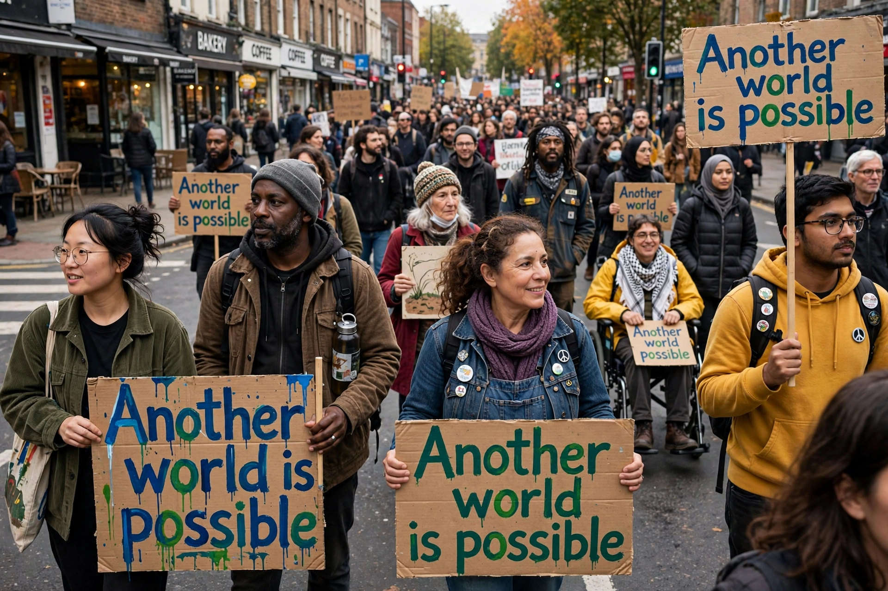

Alter-globalization
| Alter-globalization | |
|---|---|
 | |
| Demonstrators at the World Social Forum, a central gathering of the alter-globalization movement | |
| Other names | Alter-mondialisme; global justice movement (related) |
| Key events | Battle in Seattle (1999); Genoa G8 protests (2001); World Social Forum (2001– ) |
| Slogan | "Another world is possible" |
Alter-globalization (also known by its French name alter-mondialisation) is the name of a social movement whose proponents support global cooperation and interaction, but oppose what they describe as the negative effects of economic globalization, feeling that it often works to the detriment of, or does not adequately promote, human values such as environmental and climate protection, economic justice, labor protection, protection of indigenous cultures, peace and human rights.
The name may have been derived from a popular slogan of the movement: "Another world is possible", which came from the World Social Forum. The alter-globalization movement is a cooperative movement designed to "protest the direction and perceived negative economic, political, social, cultural and ecological consequences of neoliberal globalization". Many alter-globalists seek to avoid the "disestablishment of local economies and disastrous humanitarian consequences". Most members of this movement shun the label "anti-globalization" as pejorative and incorrect, since they actively support human activity on a global scale and do not oppose globalization per se.
History
The movement emerged in the late 1990s, building on earlier campaigns against structural adjustment programs imposed by the International Monetary Fund and the World Bank. The 1999 protests against the World Trade Organization Ministerial Conference in Seattle — often called the "Battle in Seattle" — brought some 50,000 protesters into the streets and are widely seen as the movement's coming-out moment in North America. In 2001 the first World Social Forum was held in Porto Alegre, Brazil, deliberately timed to coincide with the World Economic Forum in Davos, Switzerland. The Genoa protests against the G8 summit later that year drew hundreds of thousands and were marred by the death of protester Carlo Giuliani.
Ideas and activities
Alter-globalization activists have campaigned for debt relief for developing countries, fair trade, reform or abolition of international financial institutions, tighter regulation of multinational corporations, and action on climate change. ATTAC, founded in France in 1998, advocated a tax on foreign-exchange transactions (a form of Tobin tax) and became one of the movement's best-known organizations. The movement is deliberately decentralized and network-based, coordinating through social forums at world, continental, national and local levels rather than through a single party or leadership.
See also
Anti-globalization movement · World Social Forum · Fair trade · ATTAC